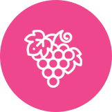
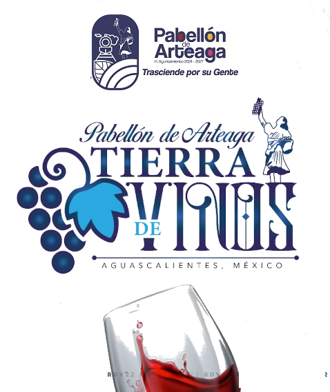
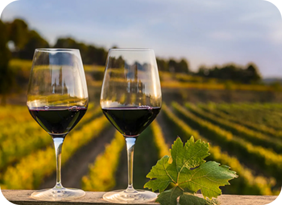
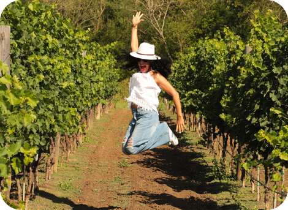
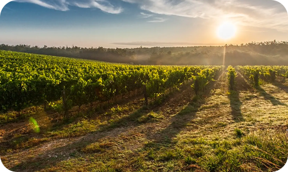

Aquí, el horizonte no solo se dibuja con puestas de sol espectaculares, sino con hileras infinitas de vides que guardan el legado de nuestra historia. Somos un destino donde el legado hidrocálido se embotella y se comparte con orgullo.

EL MUNICIPIO CON MAYOR VINICOLAS Y VIÑEDOS DE NUESTRO BELLO ESTADO. CELEBRAMOS LA RIQUEZA VITIVINÍCOLA EN SU MÁXIMO EXPLENDOR.
A traves de esta guía local, podrás descubrir los espacios mas destacados para disfrutar de los mejores vinos de la región, acompañados por la calidez de nuestra gente y de un sabor auténtico. Explora, degusta y déjate envolver por la experiencia enológica que ofrece nuestro municipio Pabellón de Arteaga.




Un destino lleno de magia, ubicado en el casco de la antigua Hacienda de San Luis de Letras, donde se combinan historia, tranquilidad y naturaleza, ideal para quienes buscan comodidad y privacidad, lejos del ruido de la ciudad. Perfecta para familias, parejas o grupos.
Cuenta con amplias áreas para disfrutar del entorno, restaurante de excelente calidad y experiencias de catas y maridajes para descubrir el mundo del vino.
Horario de atención:
Hacienda de Letras, construida en 1854, cuenta con más de 40 años de tradición en la producción de vino.
Es uno de los principales destinos de enoturismo en la región, gracias a sus recorridos por los viñedos y la diversidad de etiquetas que ofrece.
Su historia y legado permiten vivir experiencias únicas que combinan cultura, naturaleza y tradición vitivinícola.
Horario de atención:
Nacimos del sueño de crear una bodega vinícola donde se fusionaran la historia y la cultura mexicana, uniendo la tradición hidrocálido con la vanguardia enológica.
Honramos el trabajo de quienes cultivan la vid y han transmitido su conocimiento de generación en generación, esencia que da identidad y grandeza a nuestro proyecto.
Horario de atención:
Vinícola Santa Elena es una de las primeras grandes bodegas que impulsa el resurgimiento de la viticultura en el centro del país.
Su logotipo, “La Rosa de los Vientos”, simboliza el rumbo que guía su camino a través de cuatro ejes fundamentales: historia, tierra, personas y futuro, pilares que orientan cada una de sus acciones.
Horario de atención:
Vinícola El Aguaje inició en 2012 con la premisa de elaborar vinos de alta calidad, mediante un proceso cuidadoso enfocado en la armonía y el equilibrio.
Su viñedo se ubica a 1,860 metros sobre el nivel del mar, en la comunidad de El Garabato, Pabellón de Arteaga, Aguascalientes, con condiciones climáticas ideales para el cultivo de la vid.
Horario de atención:
Viña Las Cruces es una empresa 100% familiar y mexicana 🇲🇽, creada para reactivar la tradición vitivinícola e impulsar el enoturismo y los vinos hidrocálidos.
Sus instalaciones, construidas con bóvedas, ladrillo, piedra y adobe, reflejan el estilo colonial mexicano 🏛️, creando un ambiente cálido y acogedor donde se vive una experiencia llena de historia, tradición y hospitalidad.
Horario de atención:
Vinícola Sarmiento nace como un sueño que echó raíces hace cinco años, cuando comenzamos a plantar nuestras uvas. Hoy, ese esfuerzo da frutos en nuestra primera cosecha, transformada en vinos tintos, blancos y rosados de calidad excepcional.
Cada botella de Vinícola Sarmiento es reflejo de un suelo fértil, un clima ideal y la pasión de quienes creemos en el arte del vino.
Horario de atención: